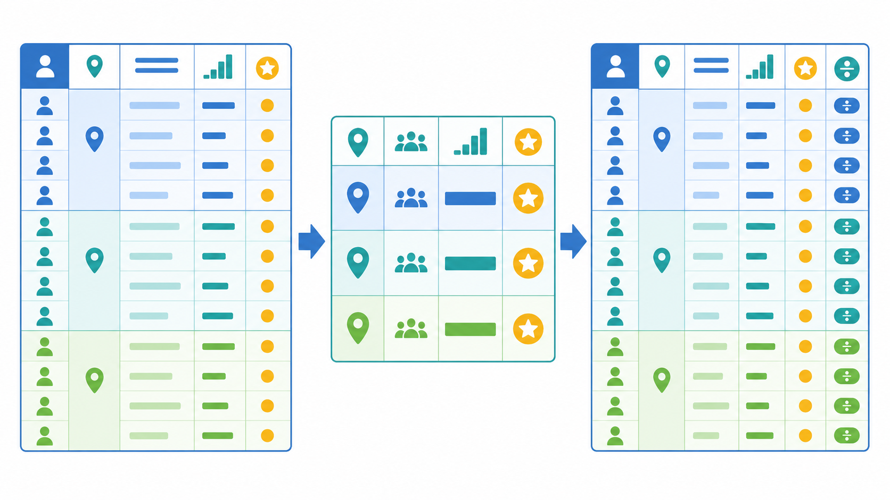

Objetivos de la práctica:
- Comprender y aplicar funciones ventana para analizar datos sin perder el detalle de cada fila.
- Resolver rankings, acumulados y comparaciones entre filas con consultas de complejidad baja a intermedia.
- Reconocer CTE,
PIVOTyUNPIVOTcomo herramientas de apoyo para organizar y presentar resultados. - Practicar los conceptos sobre la base de datos
AdventureWorks2022.
¿Qué son las Window Functions?
Las Window Functions realizan cálculos sobre filas relacionadas con la fila actual, sin agrupar el resultado como lo hace GROUP BY. Así conservan el contexto de cada registro.
Ejemplo conceptual
GROUP BY obtendrías una fila por región; con OVER(PARTITION BY ...) obtienes el promedio en cada fila sin perder el detalle.
Los temas de esta guía complementan lo aprendido sobre funciones de agregación, GROUP BY, HAVING y subconsultas.
Con GROUP BY, varias filas se convierten en una sola por grupo. Es la opción correcta cuando únicamente se necesita un resumen, por ejemplo, una fila con el total de ventas de cada año.
Con una función ventana, el total, promedio, posición o valor anterior se agrega como una nueva columna y las filas originales continúan visibles. Es la herramienta principal de esta práctica.
Con una subconsulta también pueden resolverse cálculos por etapas, pero la consulta puede volverse difícil de leer. Un CTE permite asignar un nombre a una etapa temporal y reutilizar sus columnas en la sentencia siguiente.
PIVOT y UNPIVOT no cambian el análisis: cambian la forma de presentar los datos. PIVOT convierte categorías de filas en columnas y UNPIVOT realiza el proceso contrario.
Una función ventana calcula un valor para cada fila usando otras filas relacionadas. Para construirla, primero se elige la función y luego se define su ventana con OVER().
Dentro de OVER() se toman dos decisiones: PARTITION BY indica dónde se reinicia el cálculo y ORDER BY establece la secuencia. No todas las funciones necesitan ambas cláusulas.
| Comando/Función | Descripción | Ejemplo |
|---|---|---|
OVER() | Convierte el cálculo en una función ventana. Si está vacío, usa todas las filas del resultado. | AVG(ListPrice) OVER() |
PARTITION BY | Forma grupos lógicos sin reducir las filas y reinicia el cálculo en cada grupo. | COUNT(*) OVER (PARTITION BY ProductSubcategoryID) |
ORDER BY | Define el orden dentro de la ventana. Es indispensable para rankings, acumulados y desplazamientos. | RANK() OVER (ORDER BY ListPrice DESC) |
Ejemplo 1 (básico): conservar el detalle y mostrar el promedio del grupo
SELECT ProductID, Name, ProductSubcategoryID, ListPrice,
AVG(ListPrice) OVER (
PARTITION BY ProductSubcategoryID
) AS promedio_subcategoria
FROM Production.Product
WHERE ListPrice > 0;
WHEREfiltra antes del cálculo.- La partición forma una ventana por subcategoría.
- No se usa
GROUP BY, por lo que cada producto permanece visible.
Ejemplo 2 (básico): comparar una ventana general con una particionada
SELECT ProductID, Name, ProductSubcategoryID, ListPrice,
AVG(ListPrice) OVER () AS promedio_general,
COUNT(*) OVER (
PARTITION BY ProductSubcategoryID
) AS productos_en_subcategoria
FROM Production.Product
WHERE ListPrice > 0
AND ProductSubcategoryID IS NOT NULL;
OVER() calcula un único promedio general y lo repite en cada fila. La segunda ventana se reinicia por subcategoría y cuenta cuántos productos contiene cada una.
OVER() y agrega PARTITION BY solamente cuando el cálculo deba reiniciarse por cliente, vendedor, territorio o categoría.Las funciones de agregación también pueden utilizarse como ventanas. A diferencia de una agregación con GROUP BY, el resultado del grupo se muestra junto a cada registro.
Son útiles para comparar un valor individual con su promedio, calcular el aporte porcentual de cada grupo o construir acumulados siguiendo un orden.
| Comando/Función | Descripción | Ejemplo |
|---|---|---|
SUM() OVER() | Total por partición. Si incluye un orden y un marco, puede producir un acumulado. | SUM(TotalDue) OVER (PARTITION BY TerritoryID) |
AVG() OVER() | Promedio del grupo sin ocultar filas. | AVG(ListPrice) OVER (PARTITION BY ProductSubcategoryID) |
MIN()/MAX() OVER() | Menor y mayor valor de la partición. | MAX(ListPrice) OVER (PARTITION BY ProductSubcategoryID) |
COUNT() OVER() | Cantidad de filas en la partición. | COUNT(*) OVER (PARTITION BY CustomerID) |
Ejemplo 1 (básico): mínimo, máximo y promedio de cada subcategoría
SELECT Name, ProductSubcategoryID, ListPrice,
MIN(ListPrice) OVER (PARTITION BY ProductSubcategoryID) AS minimo,
MAX(ListPrice) OVER (PARTITION BY ProductSubcategoryID) AS maximo,
AVG(ListPrice) OVER (PARTITION BY ProductSubcategoryID) AS promedio
FROM Production.Product
WHERE ListPrice > 0
AND ProductSubcategoryID IS NOT NULL;
Las tres funciones usan la misma partición. Cada producto se puede comparar inmediatamente con los límites y el promedio de su propia subcategoría.
Ejemplo 2 (intermedio): combinar GROUP BY con una función ventana
SELECT SalesPersonID,
YEAR(OrderDate) AS anio,
SUM(TotalDue) AS ventas_anuales,
SUM(SUM(TotalDue)) OVER (
PARTITION BY SalesPersonID
) AS ventas_del_vendedor,
CAST(
100.0 * SUM(TotalDue) /
NULLIF(SUM(SUM(TotalDue)) OVER (
PARTITION BY SalesPersonID
), 0)
AS decimal(5,2)
) AS porcentaje_del_total
FROM Sales.SalesOrderHeader
WHERE SalesPersonID IS NOT NULL
GROUP BY SalesPersonID, YEAR(OrderDate)
ORDER BY SalesPersonID, anio;
- El
SUM(TotalDue)interno obtiene las ventas de cada vendedor por año. - El
SUM(...) OVERexterno suma esos resultados anuales sin eliminar las filas de cada año. NULLIF(..., 0)evita una división entre cero al calcular el porcentaje.
GROUP BY y las funciones ventana no compiten. Primero puedes crear grupos y después analizar esos grupos con una ventana.Las funciones de ranking asignan una posición a cada fila según el ORDER BY de la ventana. Se utilizan para crear clasificaciones, seleccionar los primeros registros de cada grupo o dividir los resultados en segmentos.
La elección entre ROW_NUMBER, RANK y DENSE_RANK depende de cómo debe tratarse un empate.
| Comando/Función | Descripción | Ejemplo |
|---|---|---|
ROW_NUMBER() | Numera todas las filas; los empates reciben números diferentes. | ROW_NUMBER() OVER (ORDER BY ListPrice DESC) |
RANK() | Los empates comparten puesto y el siguiente puesto deja un salto. | RANK() OVER (ORDER BY ListPrice DESC) |
DENSE_RANK() | Los empates comparten puesto sin dejar saltos. | DENSE_RANK() OVER (ORDER BY ListPrice DESC) |
NTILE(4) | Divide las filas ordenadas en cuatro grupos similares. | NTILE(4) OVER (ORDER BY ListPrice) |
PERCENT_RANK() | Expresa la posición relativa entre 0 y 1. | PERCENT_RANK() OVER (ORDER BY ListPrice) |
Ejemplo 1 (básico): ordenar productos dentro de cada subcategoría
SELECT Name, ProductSubcategoryID, ListPrice,
ROW_NUMBER() OVER (
PARTITION BY ProductSubcategoryID
ORDER BY ListPrice DESC, ProductID
) AS numero_fila,
RANK() OVER (
PARTITION BY ProductSubcategoryID
ORDER BY ListPrice DESC
) AS rango,
DENSE_RANK() OVER (
PARTITION BY ProductSubcategoryID
ORDER BY ListPrice DESC
) AS rango_sin_saltos
FROM Production.Product
WHERE ListPrice > 0
AND ProductSubcategoryID IS NOT NULL;
DESC coloca el mayor precio en el puesto 1. ProductID desempata ROW_NUMBER() de forma estable, mientras RANK() y DENSE_RANK() conservan el empate por precio.
Ejemplo 2 (intermedio): obtener los tres precios más altos de cada subcategoría
;WITH ProductosClasificados AS (
SELECT ProductID, Name, ProductSubcategoryID, ListPrice,
DENSE_RANK() OVER (
PARTITION BY ProductSubcategoryID
ORDER BY ListPrice DESC
) AS posicion
FROM Production.Product
WHERE ListPrice > 0
AND ProductSubcategoryID IS NOT NULL
)
SELECT ProductID, Name, ProductSubcategoryID, ListPrice, posicion
FROM ProductosClasificados
WHERE posicion <= 3
ORDER BY ProductSubcategoryID, posicion, Name;
- La función ventana se calcula dentro del CTE.
- El
SELECTexterno puede filtrar la columnaposicion. - Con
DENSE_RANK(), todos los productos empatados en uno de los tres precios principales permanecen en el resultado.
WHERE. Calcúlala primero en un CTE o subconsulta y filtra el resultado en la consulta externa.Las funciones de desplazamiento consultan otra fila de la misma ventana sin realizar un JOIN de la tabla consigo misma. Son especialmente útiles para comparar periodos, pedidos o mediciones consecutivas.
Los marcos de filas indican qué parte de la ventana participa en un acumulado o promedio móvil. Siempre deben interpretarse junto con el ORDER BY.
| Comando/Función | Descripción | Ejemplo |
|---|---|---|
LAG() | Devuelve el valor de la fila anterior. | LAG(TotalDue) OVER (PARTITION BY CustomerID ORDER BY OrderDate, SalesOrderID) |
LEAD() | Devuelve el valor de la fila siguiente. | LEAD(TotalDue) OVER (PARTITION BY CustomerID ORDER BY OrderDate, SalesOrderID) |
FIRST_VALUE() | Devuelve el primer valor según el orden de la ventana. | FIRST_VALUE(TotalDue) OVER (PARTITION BY CustomerID ORDER BY OrderDate, SalesOrderID) |
LAST_VALUE() | Devuelve el último valor del marco. Para abarcar toda la partición se debe ampliar el final del marco. | LAST_VALUE(TotalDue) OVER (PARTITION BY CustomerID ORDER BY OrderDate, SalesOrderID ROWS BETWEEN UNBOUNDED PRECEDING AND UNBOUNDED FOLLOWING) |
ROWS BETWEEN | Define las filas incluidas en un cálculo acumulado o móvil. | ROWS BETWEEN 2 PRECEDING AND CURRENT ROW |
Ejemplo 1 (básico): consultar el pedido anterior y el siguiente
SELECT CustomerID, SalesOrderID, OrderDate, TotalDue,
LAG(TotalDue) OVER (
PARTITION BY CustomerID
ORDER BY OrderDate, SalesOrderID
) AS pedido_anterior,
LEAD(TotalDue) OVER (
PARTITION BY CustomerID
ORDER BY OrderDate, SalesOrderID
) AS pedido_siguiente
FROM Sales.SalesOrderHeader
WHERE CustomerID BETWEEN 11000 AND 11010
ORDER BY CustomerID, OrderDate, SalesOrderID;
LAG() busca la fila anterior y LEAD() la siguiente dentro del mismo cliente. La primera fila no tiene pedido anterior y la última no tiene pedido siguiente, por lo que esos valores serán NULL.
Ejemplo 2 (intermedio): diferencia, acumulado y promedio móvil
;WITH Historial AS (
SELECT CustomerID, SalesOrderID, OrderDate, TotalDue,
LAG(TotalDue) OVER (
PARTITION BY CustomerID
ORDER BY OrderDate, SalesOrderID
) AS pedido_anterior,
SUM(TotalDue) OVER (
PARTITION BY CustomerID
ORDER BY OrderDate, SalesOrderID
ROWS BETWEEN UNBOUNDED PRECEDING AND CURRENT ROW
) AS venta_acumulada,
AVG(TotalDue) OVER (
PARTITION BY CustomerID
ORDER BY OrderDate, SalesOrderID
ROWS BETWEEN 2 PRECEDING AND CURRENT ROW
) AS promedio_ultimos_tres
FROM Sales.SalesOrderHeader
WHERE CustomerID BETWEEN 11000 AND 11010
)
SELECT CustomerID, SalesOrderID, OrderDate, TotalDue,
pedido_anterior,
TotalDue - pedido_anterior AS diferencia,
venta_acumulada,
promedio_ultimos_tres
FROM Historial
ORDER BY CustomerID, OrderDate, SalesOrderID;
- El CTE permite reutilizar
pedido_anteriorpara obtener la diferencia sin repetirLAG(). UNBOUNDED PRECEDINGinicia el acumulado en el primer pedido del cliente.2 PRECEDINGincluye hasta dos pedidos anteriores y la fila actual.
ORDER BY, como SalesOrderID, cuando varias filas puedan tener la misma fecha.Estas herramientas son complementarias. En esta práctica basta con reconocer su propósito y aplicar su estructura básica: un CTE organiza una consulta; PIVOT y UNPIVOT cambian la forma del resultado.
| Comando/Función | Descripción | Ejemplo |
|---|---|---|
WITH ... AS | Da nombre a un resultado temporal que utiliza la sentencia siguiente. | ;WITH Productos AS (SELECT ...) |
PIVOT | Convierte categorías almacenadas en filas en columnas y agrega sus valores. | PIVOT (SUM(Monto) FOR Anio IN ([2013], [2014])) |
FOR ... IN (...) | Indica qué columna contiene las categorías y cuáles serán las columnas finales. | FOR Anio IN ([2013], [2014]) |
UNPIVOT | Convierte las columnas indicadas nuevamente en filas. | UNPIVOT (Monto FOR Anio IN ([2013], [2014])) |
Ejemplo 1 (básico): CTE para organizar un filtro
;WITH ProductosConPrecio AS (
SELECT ProductID, Name, ListPrice
FROM Production.Product
WHERE ListPrice > 0
)
SELECT * FROM ProductosConPrecio;
El CTE no crea una tabla permanente. En esta guía se utilizarán CTE no recursivos; las CTE recursivas únicamente quedan como referencia para secuencias y jerarquías.
Ejemplo 2 (básico): convertir años en columnas con PIVOT
SELECT ProductID, [2013], [2014]
FROM (
SELECT d.ProductID, YEAR(h.OrderDate) AS Anio, d.LineTotal
FROM Sales.SalesOrderHeader h
JOIN Sales.SalesOrderDetail d ON d.SalesOrderID = h.SalesOrderID
) fuente
PIVOT (
SUM(LineTotal) FOR Anio IN ([2013], [2014])
) p;
YEAR(OrderDate) crea las categorías y la lista IN define las columnas visibles. En un PIVOT estático, esas columnas deben conocerse antes de ejecutar la consulta.
Ejemplo 3 (básico): devolver columnas a filas con UNPIVOT
;WITH Resumen AS (
SELECT *
FROM (VALUES (1, 1000.00, 1200.00))
v(ProductID, [2013], [2014])
)
SELECT ProductID, Anio, Monto
FROM Resumen
UNPIVOT (
Monto FOR Anio IN ([2013], [2014])
) u;
El resultado contiene dos filas para el producto: una para 2013 y otra para 2014. UNPIVOT omite los valores NULL de las columnas transformadas.
Selecciona la herramienta según la pregunta que deseas responder. Las primeras cinco filas corresponden al contenido principal de la práctica.
| Tema | Comandos principales | Cuándo usarlo |
|---|---|---|
| Estructura de ventana | OVER, PARTITION BY, ORDER BY | Definir las filas relacionadas, sus grupos y su orden. |
| Agregación ventana | SUM/AVG/MIN/MAX/COUNT OVER | Estadísticas por grupo conservando cada fila. |
| Ranking | ROW_NUMBER, RANK, DENSE_RANK, NTILE, PERCENT_RANK | Numerar, clasificar, dividir o medir la posición relativa. |
| Desplazamiento | LAG, LEAD, FIRST_VALUE, LAST_VALUE | Comparar filas anteriores, siguientes o de referencia. |
| Marcos | ROWS BETWEEN | Promedios móviles y sumas rodantes. |
| CTE | WITH ... AS | Organizar una consulta en etapas y reutilizar columnas calculadas. |
| PIVOT | PIVOT, UNPIVOT, FOR ... IN | Convertir filas en columnas y viceversa. |
Se desarrollará un set de 5 ejercicios de dificultad básica a intermedia sobre las temáticas revisadas.
- Trabaja en la base de datos
AdventureWorks2022. - Si no está restaurada, busca el respaldo en Ecampus: Ambiente de trabajo → Archivos .bak.
- Sigue las instrucciones de tu instructor responsable.
- Documenta la función, partición y orden utilizados en cada solución.
Conexión al contenedor de Docker desde SQL Server Management Studio
| Campo | Valor |
|---|---|
| Server | localhost,1434 |
| Authentication | SQL Server Authentication |
| Login | sa |
| Password | Admin123! |
Departamento de Electrónica e Informática, Universidad Centroamericana José Simeón Cañas, La Libertad, El Salvador.
Versión de este documento: Versión 2, 2026.
| Versión | Autores |
| 1 | Vanessa Sarai Duran Cruz (00025822@uca.edu.sv), Diego Eduardo Castro Quintanilla (00117322@uca.edu.sv), Kevin Josue Claros Castro (00157320@uca.edu.sv) |
| 2 | Diego Eduardo Castro Quintanilla (00117322@uca.edu.sv), Jaime Arturo Magaña Nerio (00077320@uca.edu.sv) |

This work is licensed under a
Creative Commons Attribution-NonCommercial-ShareAlike 4.0
International License .